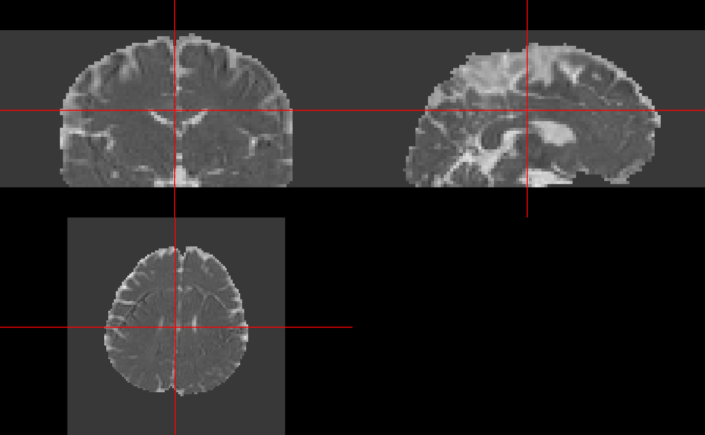

camino_dti.RmdMuch of this work has been adapted by the FSL guide for DTI
reconstruction: http://camino.cs.ucl.ac.uk/index.php?n=Tutorials.DTI.
We will show you a few steps that have been implemented in
rcamino: camino_pointset2scheme,
camino_modelfit, camino_fa,
camino_md, and camino_dteig.
The data located in this tutorial is located at http://cmic.cs.ucl.ac.uk/camino//uploads/Tutorials/example_dwi.zip. It contains 3 files:
4Ddwi_b1000.nii.gz - a 4D image of the DWI data.brain_mask.nii.gz - A brain mask of the DTI datagrad_dirs.txt - a 3 column text file with the b-vectors
as the first 3 columnsFirst, we download the data into a temporary directory the unzip it:
tdir = tempdir()
tfile = file.path(tdir, "example_dwi.zip")
download.file("http://cmic.cs.ucl.ac.uk/camino//uploads/Tutorials/example_dwi.zip",
destfile = tfile)
files = unzip(zipfile = tfile, exdir = tdir, overwrite = TRUE)As dtifit requires the b-values and b-vectors to be
separated, and this data has b-values of
when the b-vectors is not zero. This is very important and you
must know where your b-values and b-vectors are when doing your analyses
and what units they are in.
library(rcamino)
b_data_file = grep("[.]txt$", files, value = TRUE)
scheme_file = camino_pointset2scheme(infile = b_data_file,
bvalue = 1e9)/home/runner/work/_temp/Library/rcamino/camino/bin/pointset2scheme -inputfile '/tmp/RtmpMllIGQ/grad_dirs.txt' -bvalue 1000000000 -outputfile /tmp/RtmpMllIGQ/file82865fda06ca.schemeHere we ensure that the number of b-values/b-vectors is the same as the number of time points in the 4D image.
library(neurobase)Loading required package: oro.niftioro.nifti 0.11.5[1] 33[1] 33 used (Mb) gc trigger (Mb) max used (Mb)
Ncells 912459 48.8 1429821 76.4 1429821 76.4
Vcells 1548901 11.9 84024013 641.1 105030016 801.4We will save the result in a temporary file (outfile),
but also return the result as a nifti object
ret, as retimg = TRUE. We will use the first
volume as the reference as is the default in FSL. Note FSL is
zero-indexed so the first volume is the zero-ith index:
float_fname = camino_image2voxel(infile = img_fname,
outputdatatype = "float")/home/runner/work/_temp/Library/rcamino/camino/bin/image2voxel -inputfile '/tmp/RtmpMllIGQ/4Ddwi_b1000.nii.gz' -outputfile '/tmp/RtmpMllIGQ/file82862f9cd3c7.Bfloat' -outputdatatype floatNote, from here on forward we will use either the filename for the
output of the eddy current correction or the eddy-current-corrected
nifti object.
mask_fname = grep("mask", files, value = TRUE)
model_fname = camino_modelfit(
infile = float_fname,
scheme = scheme_file,
mask = mask_fname,
outputdatatype = "double"
)/home/runner/work/_temp/Library/rcamino/camino/bin/modelfit -inputfile '/tmp/RtmpMllIGQ/file82862f9cd3c7.Bfloat' -outputfile '/tmp/RtmpMllIGQ/file82864ac8739e.Bdouble' -inputdatatype float -schemefile /tmp/RtmpMllIGQ/file82865fda06ca.scheme -bgmask /tmp/RtmpMllIGQ/brain_mask.nii.gz -maskdatatype float -model dt
fa_fname = camino_fa(infile = model_fname)cat '/tmp/RtmpMllIGQ/file82864ac8739e.Bdouble' | /home/runner/work/_temp/Library/rcamino/camino/bin/fa -inputmodel dt -outputdatatype double > '/tmp/RtmpMllIGQ/file8286737c7d64.Bdouble'
library(neurobase)
fa_img_name = camino_voxel2image(infile = fa_fname,
header = img_fname,
gzip = TRUE,
components = 1)/home/runner/work/_temp/Library/rcamino/camino/bin/voxel2image -inputfile /tmp/RtmpMllIGQ/file8286737c7d64.Bdouble -header /tmp/RtmpMllIGQ/4Ddwi_b1000.nii.gz -outputroot /tmp/RtmpMllIGQ/file8286370d605a_ -components 1 -gzip
fa_img = readnii(fa_img_name)We can chain Camino commands using the magrittr pipe
operation (%>%):
library(magrittr)
fa_img2 = model_fname %>%
camino_fa() %>%
camino_voxel2image(header = img_fname, gzip = TRUE, components = 1) %>%
readniicat '/tmp/RtmpMllIGQ/file82864ac8739e.Bdouble' | /home/runner/work/_temp/Library/rcamino/camino/bin/fa -inputmodel dt -outputdatatype double > '/tmp/RtmpMllIGQ/file82863012fe70.Bdouble'/home/runner/work/_temp/Library/rcamino/camino/bin/voxel2image -inputfile /tmp/RtmpMllIGQ/file82863012fe70.Bdouble -header /tmp/RtmpMllIGQ/4Ddwi_b1000.nii.gz -outputroot /tmp/RtmpMllIGQ/file8286d746bb0_ -components 1 -gzip
all.equal(fa_img, fa_img2)[1] TRUESimilar to getting FA maps, we can get mean diffusivity (MD) maps,
read them into R, and visualize them using
ortho2:
md_img = model_fname %>%
camino_md() %>%
camino_voxel2image(header = img_fname, gzip = TRUE, components = 1) %>%
readniicat '/tmp/RtmpMllIGQ/file82864ac8739e.Bdouble' | /home/runner/work/_temp/Library/rcamino/camino/bin/md -inputmodel dt -outputdatatype double > '/tmp/RtmpMllIGQ/file828662d5424b.Bdouble'/home/runner/work/_temp/Library/rcamino/camino/bin/voxel2image -inputfile /tmp/RtmpMllIGQ/file828662d5424b.Bdouble -header /tmp/RtmpMllIGQ/4Ddwi_b1000.nii.gz -outputroot /tmp/RtmpMllIGQ/file8286476792f_ -components 1 -gzip
ortho2(md_img)
Using camino_dt2nii, we can export the diffusion tensors
into NIfTI files. We see the result is the filenames of the NIfTI files,
and that they all exist (otherwise there’d be an errors.)
nifti_dt = camino_dt2nii(
infile = model_fname,
inputmodel = "dt",
header = img_fname,
gzip = TRUE
)/home/runner/work/_temp/Library/rcamino/camino/bin/dt2nii -inputfile /tmp/RtmpMllIGQ/file82864ac8739e.Bdouble -header /tmp/RtmpMllIGQ/4Ddwi_b1000.nii.gz -inputmodel dt -outputroot /tmp/RtmpMllIGQ/file82862af6451c_ -gzip
stopifnot(all(file.exists(nifti_dt)))
print(nifti_dt)[1] "/tmp/RtmpMllIGQ/file82862af6451c_exitcode.nii.gz"
[2] "/tmp/RtmpMllIGQ/file82862af6451c_lns0.nii.gz"
[3] "/tmp/RtmpMllIGQ/file82862af6451c_dt.nii.gz" We can read these DT images into R again using
readnii, but we must set drop_dim = FALSE for
diffusion tensor images because the pixel dimensions are zero and
readnii assumes you want to drop “empty” dimensions
dt_imgs = lapply(nifti_dt, readnii, drop_dim = FALSE)